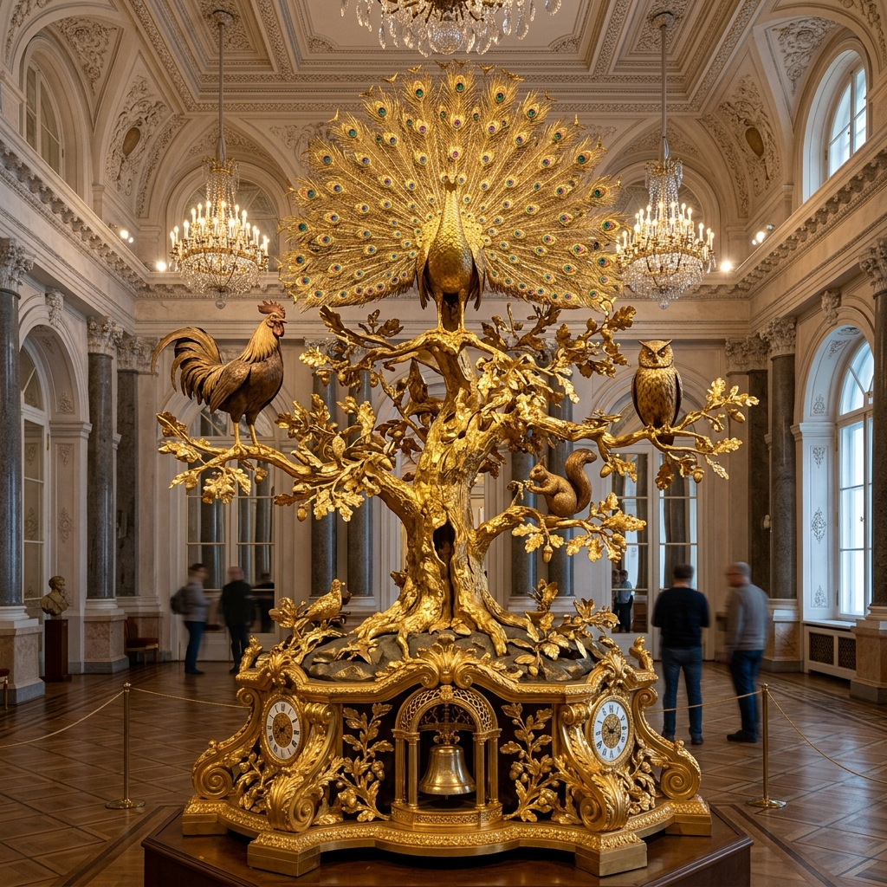
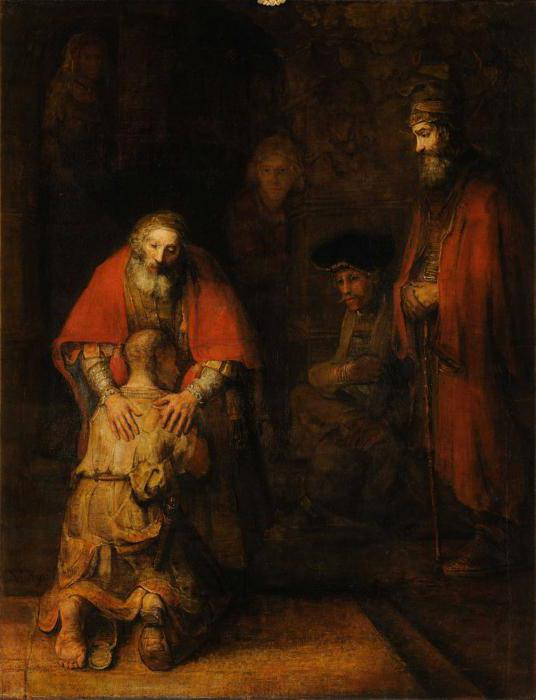
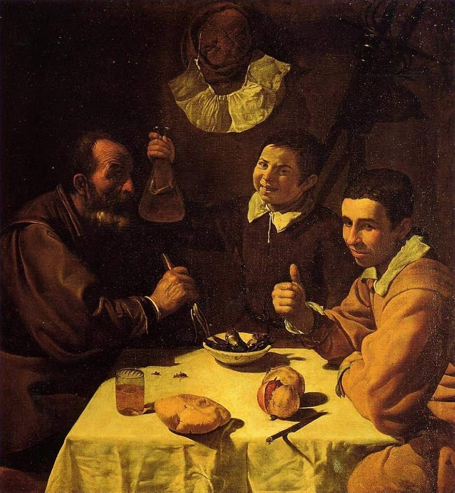
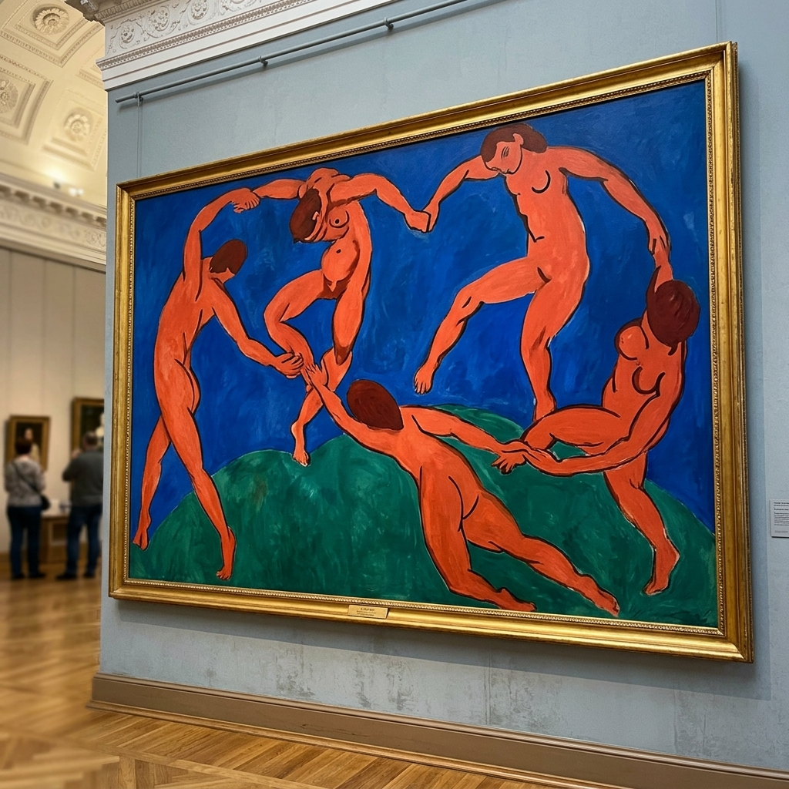
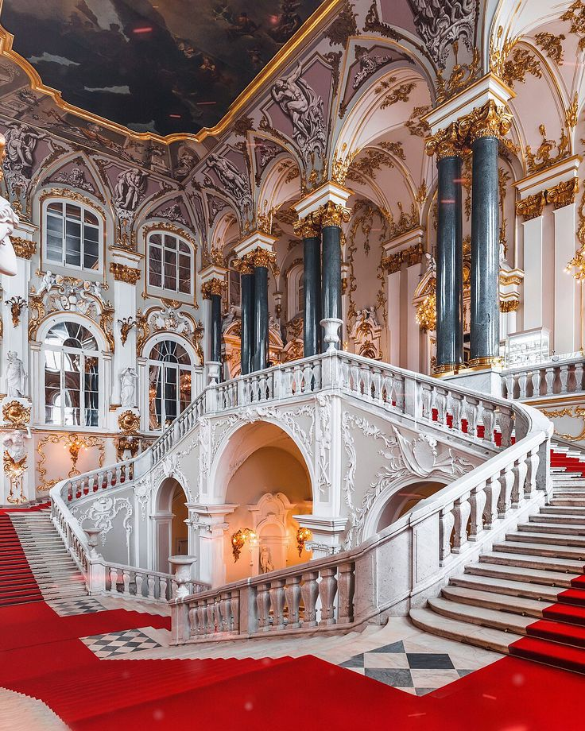
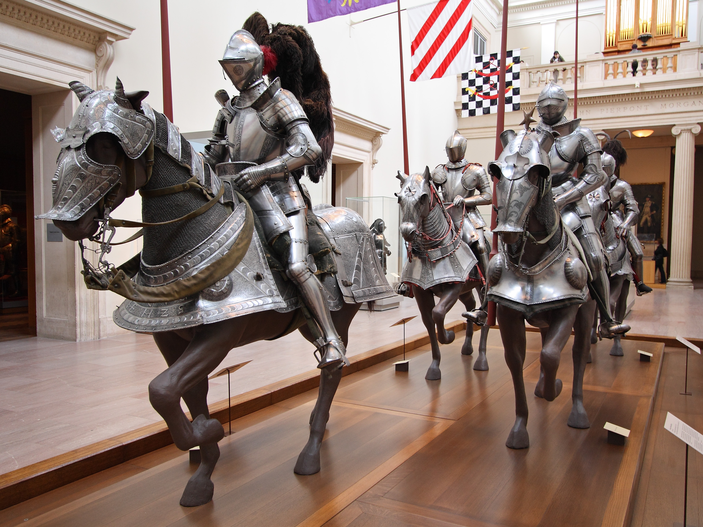

HERMITAGE
The State Hermitage Museum in Saint Petersburg, Russia, is the second-largest art museum in the world by gallery space.
Founded in 1764 when Empress Catherine the Great acquired an impressive collection of paintings from Berlin.
Comprises a complex of six historic buildings along Palace Embankment, including the Winter Palace of Russian tsars.
Houses over 3 million items, including the largest collection of paintings in the world across 360+ grand halls.
Tovus Soati — 18-asr Mexanikasining Shohona Mo'jizasi
Tovus soati (The Peacock Clock) — 1770-yillarda Londonda ingliz zargari va mexanigi Jeyms Koks tomonidan yaratilgan hayratlanarli mexanik avtomat-soatdir. Ushbu oltin san'at asari Knyaz Grigoriy Potyomkin tomonidan imperatrisa Yekaterina II ga shohona sovg'a sifatida taqdim etilgan. Zarhal zarb qilingan eman daraxti shoxida tovus, boyqush, xo'roz va olmaxon joylashgan. Soat har soatda musiqiy jiringlash bilan harakatga kelib, tovus o'z dumi patlarini yoyadi, boyqush qafasida aylanadi va xo'roz qichqiradi. Bu 18-asrdan to hozirgi kungacha benuqson ishlaydigan dunyodagi yagona soatdir.


1668 yilAdashgan O'g'ilning Qaytishi
Rembrandt van RijnJahon san'ati tarixidagi eng emotsional va ulug'vor kechirim mavzusidagi shohasar.

1617-yilUchtalik Nonushta
Diego Velazquez (Ispaniya)Kundalik hayot lavhasini yorug'lik, soya va yuz ifodalari orqali aqlbovar qilmas darajada jonli aks ettirgan Ermitajning eng sevimli kartinalaridan biri.

1910 yilRaqs (La Danse)
Henri MatisseXX asr avangard va modernizm san'atining eng mashhur, jo'shqin polotnosi.

1760-yillarIordan Tantana Zinapoyasi
Francesco Rastrelli Me'morligiOltin zarhallar, oyna va oq marmar ustunlar bilan bezatilgan shohona saroy durdonasi.

Oltin XazinaRitsarlar Zali va Skif Oltini
Antik va O'rta Asr XazinasiOtliq ritsarlar to'liq harbiy anjomlari va ming yillik skif oltin durdonalari.
Ermitaj Saroy Majmuasi
3 Million San'at XazinasiRossiya imperatorlari qarorgohi bo'lgan 6 ta tarixiy saroy va qadimiy zallar.
Ermitaj Muzey Majmualari
Neva daryosi bo'yidagi 6 ta tarixiy saroy va zamonaviy Bosh shtab binosi
Qishki Saroy va Kichik Ermitaj
Rossiya imperatorlarining bosh qarorgohi bo'lgan ushbu barokko saroyida 1,000 dan ortiq xona mavjud. Georgiy zali, Katta taxt zali, Malaxit zali va Pavilon zali (Tovus soati) aynan shu yerda joylashgan.
- Tovus Soati (Peacock Clock) va Pavilon zali
- Imperatorning Oltin va Malaxit mehmonxonalari
- 1812-yilgi Harbiy Galereya (332 ta general portreti)
- Buyuk Pyotrning Kichik Taxt Zali
Katta va Yangi Ermitaj
Italiya, Ispaniya, Gollandiya va Flamandiyaning klassik tasviriy san'atiga bag'ishlangan. Leonardo da Vinchi, Rafael, Titian, Karavadjo va Rubensning durdonalari saqlanadi.
- Rafael Lodjiyalari (Vatikanning aniq me'moriy nusxasi)
- Leonardo da Vinchining 2 ta original kartinasi (Madonna Benua, Madonna Litta)
- Titian, Giorgione va Venetsiya maktabi zallari
- Rim va Yunon antik haykallar zali
Bosh Shtab Binosi (General Staff)
Saray maydonining qarshisidagi yarim doira bino bo'lib, unda 19–20-asr fransuz impressionistlari (Monet, Renoir, Degas, Gauguin, Van Gogh, Matisse, Picasso) ning dunyodagi eng boy kolleksiyalaridan biri joylashgan.
- Anri Matissning "Raqs" (La Danse) va "Musiqa" asarlari
- Pablo Pikassoning "Moviy" va "Pushti" davrlari kartinalari
- Klod Monet va Pol Sezann durdonalari
- Faberje zargarlik xazinasi ko'rgazmasi
Tashrif Buyuruvchilar Uchun Qo'llanma
Davlat Ermitajiga sayohat qilish bo'yicha zarur ma'lumotlar
Ish Tartibi
Seshanba, Payshanba, Yakshanba: 11:00 – 18:00
Chorshanba, Juma, Shanba: 11:00 – 20:00 (Kechki ochilish)
Dushanba: Yopiq (Dam olish kuni).
Chipta Narxlari
Asosiy muzey majmuasi chiptasi: 500 RUB
Talabalar va o'quvchilar: Imtiyozli
Har oyning uchinchi payshanbasi: Barcha uchun kirish BEPUL.
Manzil & Transport
Manzil: Saray maydoni, 2, Sankt-Peterburg
Metro bekatlari: Admiralteyskaya, Nevskiy Prospekt.
Neva daryosi bo'yidagi Saroy sohilida joylashgan.
Foydali Maslahatlar
• Tovus soati chorshanba kunlari soat 19:00 da harakatga keltiriladi.
• Har bir eksponatga 1 daqiqa ajratilsa, barchasini ko'rishga 11 yil kerak bo'ladi.
• Chiptalarni rasmiy saytdan oldindan elektron olish tavsiya etiladi.
Boshqa Dunyo Muzeylarini Kashf Qiling
MuseWiki bo'ylab sayohatni davom ettiring